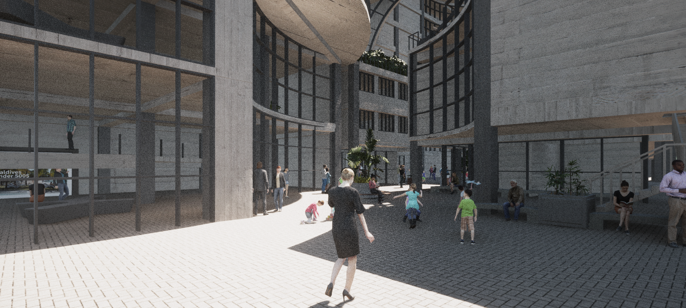
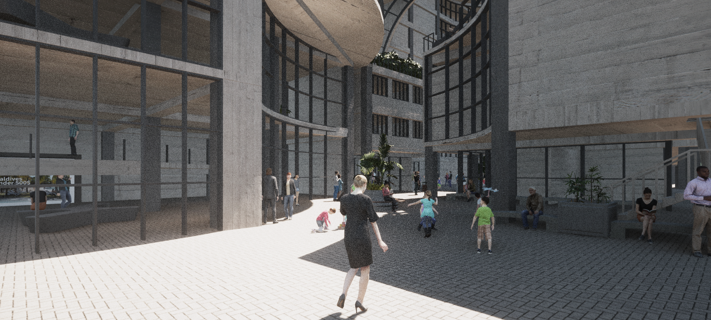
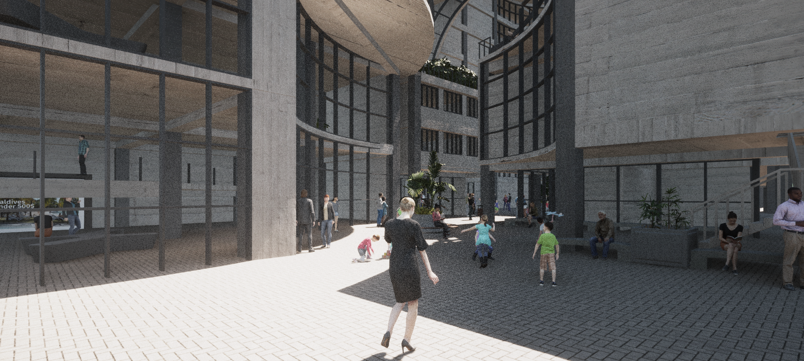
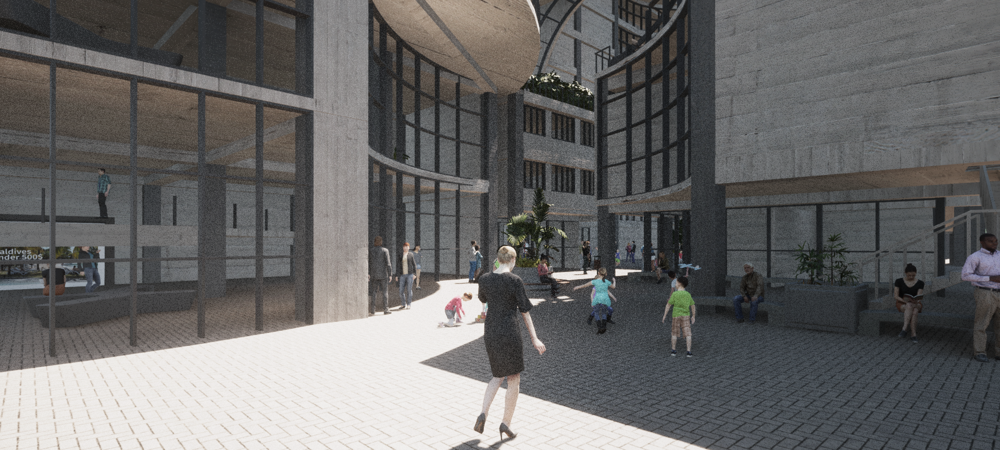

 


The key point of my design. From the perspective of issues, I transformed the narrative methods in movies and novels into design elements, and added the appearance of the site to create a narrative atmosphere and experience of the space. We who live in the mirror all our lives, is there any chance to escape?
We try to change the shape after inhalation by adding other substances. Add other substances to replace the deformation of the air and control the shape after inhalation. The possibility of all permutations and combinations of interconnecting elements of different numbers is investigated in both rod and edge ways.


This is a Cultural&Creative Center. I used arched and semicircular elements to create this semi-open outdoor square plus indoor exhibition workshop.
This church was designed for Christianity. Masses, services, and gatherings are daily routines that Chris- tians must go through.Worship is held from Friday to weekend. Pastor preaching, gathering and fellowship are Christian activities.


This is a series of architectural works. The subconscious mind is the self that dominates the dream world, while the real world self changes real behavior because of subconscious thoughts.
王新卉
Wang Xin Hui
Born in 1999, lives in Taiwan. Graduated from the Department of Architecture, Tamkang University in 2023.
I’m good at researching issues, thinking about conceptual issues, and I can think and act simultaneously.I know autocad, ps, ai, sketch up, rhino and a little programming language.